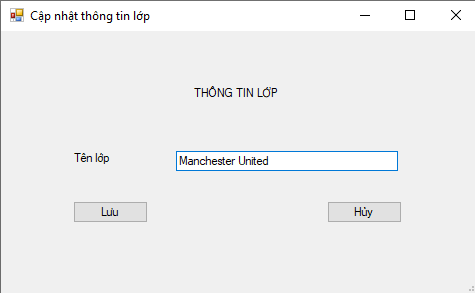

1. Sau khi mở ứng dụng sẽ hiện ra màn hình đăng nhập. Bạn cần có tài khoản để truy cập vào phần mềm quản lý nhân viên
2. Sau khi đăng nhập thành công màn hình sẽ hiện ra 3 lựa chọn để người dùng chọn để quản lý
3. Quản lý học sinh
- Thêm học sinh
- Sửa thông tin học sinh
- Xóa học sinh
- Tìm kiếm học sinh
3.1. Chức năng thêm học sinh

Để thêm nhân viên ta click vào nút thêm tại màn hình quản lý học sinh. Sau đó, thực hiện điền thông tin học sinh. Cuối cùng, để lưu lại thông tin vừa nhập, click vào nút lưu
3.2. Chức năng sửa thông tin học sinh
Khi click đúp trực tiếp vào thông tin học sinh, màn hình sẽ hiện ra giao diện sửa thông tin học sinh. Tại đó, người dùng muốn sửa thông tin nào thì click vào phần đó và click nút Lưu để lưu lại thông tin vừa sửa
3.3. Xóa học sinh
Click vào học sinh muốn xóa. Để xóa, click vào nút Xóa. Màn hình sẽ hiển thị thông báo về việc xóa, nếu muốn thực hiện, nhấn Yes để xóa.
3.4. Tìm kiếm học sinh
Chương trình cung cấp tìm kiếm học sinh theo:
- Mã học sinh
- Tên học sinh
- Mã lớp theo học
Sau khi chọn trường tìm kiếm, người dùng nhập thông tin của học sinh cần tìm kiếm và click vào nút Tìm kiếm sẽ hiển thị ra kết quả
4. Quản lý lớp
- Thêm lớp
- Sửa thông tin lớp
- Xóa lớp
- Tìm kiếm lớp
4.1. Chức năng thêm lớp
Để thêm nhân viên ta click vào nút thêm tại màn hình quản lý lớp. Sau đó, thực hiện điền thông tin lớp. Cuối cùng, để lưu lại thông tin vừa nhập, click vào nút lưu
4.2. Chức năng sửa thông tin lớp
Khi click đúp trực tiếp vào thông tin lớp, màn hình sẽ hiện ra giao diện sửa thông tin lớp. Tại đó, người dùng muốn sửa thông tin nào thì click vào phần đó và click nút Lưu để lưu lại thông tin vừa sửa
4.3. Xóa lớp
Click vào lớp muốn xóa. Để xóa, click vào nút Xóa. Màn hình sẽ hiển thị thông báo về việc xóa, nếu muốn thực hiện, nhấn Yes để xóa.
4.4. Tìm kiếm lớp
Chương trình cung cấp tìm kiếm lớp theo:
- Mã lớp
- Tên lớp
Sau khi chọn trường tìm kiếm, người dùng nhập thông tin của lớp cần tìm kiếm và click vào nút Tìm kiếm sẽ hiển thị ra kết quả
5. Quản lý giáo viên
- Thêm giáo viên
- Sửa thông tin giáo viên
- Xóa giáo viên
- Tìm kiếm giáo viên
5.1. Chức năng thêm giáo viên
Để thêm nhân viên ta click vào nút thêm tại màn hình quản lý giáo viên. Sau đó, thực hiện điền thông tin giáo viên. Cuối cùng, để lưu lại thông tin vừa nhập, click vào nút lưu
5.2. Chức năng sửa thông tin giáo viên
Khi click đúp trực tiếp vào thông tin giáo viên, màn hình sẽ hiện ra giao diện sửa thông tin giáo viên. Tại đó, người dùng muốn sửa thông tin nào thì click vào phần đó và click nút Lưu để lưu lại thông tin vừa sửa
5.3. Xóa giáo viên
Click vào giáo viên muốn xóa. Để xóa, click vào nút Xóa. Màn hình sẽ hiển thị thông báo về việc xóa đã xóa thành công giáo viên vừa chọn.
5.4. Tìm kiếm giáo viên
Chương trình cung cấp tìm kiếm giáo viên theo:
- Mã giáo viên
- Tên giáo viên
- Mã lớp đang dạy
Sau khi chọn trường tìm kiếm, người dùng nhập thông tin của giáo viên cần tìm kiếm và click vào nút Tìm kiếm sẽ hiển thị ra kết quả